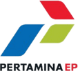
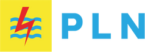
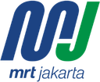
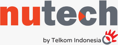
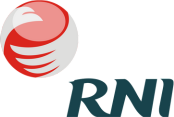
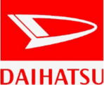

Temukan Arah Karier Digital yang Tepat untukmu
Kenali minat, potensi, dan kecenderunganmu di dunia digital untuk menemukan bidang yang paling sesuai dengan kemampuan dan tujuanmu.
Dipercaya oleh pelajar dan profesional dari berbagai institusi






Kenapa Career Path Digital Itu Penting?
Mengenali Potensi Diri
Kenali minat dan bakatmu dengan lebih jelas.
Memilih Arah yang Tepat
Hindari salah jurusan atau pekerjaan yang tidak sesuai.
Belajar Lebih Terarah
Fokus pada skill yang benar-benar dibutuhkan di industri.
Meningkatkan Peluang Karier
Persiapkan diri untuk masa depan dengan peluang kerja luas.
Program Pembelajaran untuk Masa Depan Digitalmu
Programming & Coding
Belajar programming dan coding dengan kurikulum berstandar industri.
Mulai Belajar →Data Science
Mengembangkan kemampuan data science untuk kebutuhan karier digital.
Mulai Belajar →Digital Marketing
Menyusun strategi pemasaran digital yang relevan dengan industri.
Mulai Belajar →Kata Mereka yang Sudah Merasakan Manfaatnya
"Materinya lengkap dan mudah dipahami. Mentornya juga sangat membantu."
"Materinya lengkap dan mudah dipahami. Mentornya juga sangat membantu."
"Materinya lengkap dan mudah dipahami. Mentornya juga sangat membantu."
"Haltev membantu saya mendapatkan pekerjaan pertama di bidang tech."
"Programnya terstruktur dan relevan dengan kebutuhan industri saat ini."
Kenali Dirimu, Temukan Arah Kariermu
Jawab setiap pertanyaan dengan jujur untuk mendapatkan rekomendasi bidang digital yang paling sesuai dengan minat dan kecenderunganmu.
"Tidak ada jawaban yang salah, karena ini tentang kamu."
Selamat, Kamu!Kamu Cocok di BidangWeb Development
Berdasarkan jawabanmu, kamu memiliki potensi besar untuk berkembang di bidang ini.

Profil Skormu
Berdasarkan jawaban tesmu✓ Kamu memiliki profil yang sangat sesuai untuk berkarier sebagai Web Developer.
Analisis AI Untukmu
Dianalisis oleh AI berdasarkan jawabanmuAnalisis AI belum tersedia saat ini. Hasil tes di atas tetap berlaku.
Kekuatanmu
Perlu Dikembangkan
Kenapa Bidang Ini Cocok
Alternatif Lain
Rekomendasi Karier
Langkah Awal
Kenapa Web Development Cocok Untukmu?
Bidang Lain yang Juga Cocok Untukmu?
Apa Itu Web Development?
Web Development adalah proses membangun dan mengembangkan website atau aplikasi berbasis web, mulai dari tampilan, interaksi, hingga fungsi yang berjalan di dalamnya.
- Prospek karier luas
- Bisa dipelajari dari nol
- Dibutuhkan industri

Yang Harus Dipelajari
Topik Utama yang Perlu Dikuasai
Gambaran topik yang umumnya dipelajari secara bertahap di bidang ini.
Program yang Bisa Kamu Mulai di Haltev
Testimoni Alumni
"Materinya lengkap dan mudah dipahami. Mentornya juga sangat membantu."
"Haltev membantu saya mendapatkan pekerjaan pertama di bidang tech."
"Programnya terstruktur dan relevan dengan kebutuhan industri saat ini."
Client & Hiring Partner
Belum puas dengan hasilnya, atau ingin eksplorasi bidang lain?